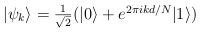

| Safe Haskell | None |
|---|
Algorithms.USV.Definitions
Contents
Description
This module provides global definitions for the Unique Shortest Vector algorithm.
- type TwoPoint = (Qubit, [QDInt])
- type CosetState = (Qubit, QDInt)
- type Psi_k = (Qubit, Int)
- concat_pair :: ([a], [b]) -> ([a], [b]) -> ([a], [b])
- multi_split :: StdGen -> [StdGen]
- find :: [a] -> (a -> Bool) -> String -> (a, [a])
- separate :: [a] -> (a -> Bool) -> ([a], [a])
- expand :: Integer -> Integer -> [Integer]
- qdiscard_psi_ks :: [Psi_k] -> Circ ()
- find_partners :: Ord b => (a -> b) -> [a] -> ([(a, a)], [a])
- norm :: [Integer] -> Float
- vector_add :: Num a => [a] -> [a] -> [a]
- q_vector_add :: [QDInt] -> [QDInt] -> Circ [QDInt]
- scalar_mult :: Num a => a -> [a] -> [a]
- q_scalar_mult :: QDInt -> [QDInt] -> Circ [QDInt]
- matrix_mult :: [[Integer]] -> [Integer] -> [Integer]
- q_matrix_mult :: [[QDInt]] -> [QDInt] -> Circ [QDInt]
- is_zero_vector :: [Integer] -> Bool
- ext_euclid :: Integer -> Integer -> (Integer, Integer, Integer, Integer, Integer)
- lll :: [[Integer]] -> [[Integer]]
- find_prime :: Int -> Int
- is_in_lattice :: [Integer] -> [[Integer]] -> Bool
- reduce_lattice :: [[Integer]] -> [[Integer]]
- column_op :: [Integer] -> [Integer] -> ([Integer], [Integer])
Types for the Unique Shortest Vector algorithm
type CosetState = (Qubit, QDInt)Source
type Psi_k = (Qubit, Int)Source
An input to sieving: a pair of a Qubit and an
integer. Holds a state of the form:

together with the integer k.
General purpose functions
concat_pair :: ([a], [b]) -> ([a], [b]) -> ([a], [b])Source
Concatenate two pairs of lists componentwise.
multi_split :: StdGen -> [StdGen]Source
Construct a list of random number generators.
find :: [a] -> (a -> Bool) -> String -> (a, [a])Source
Given a list l, a predicate p and an error message msg, return a pair (a,l') where a is the first element of l satisfying p and l' is the remaining list. If no such element exists, raise an error and display msg.
separate :: [a] -> (a -> Bool) -> ([a], [a])Source
Given a list l and a predicate p, return a pair (l1, l2) where l1 contains the elements of l satisfying p and l2 the others.
expand :: Integer -> Integer -> [Integer]Source
Given integers m and n, compute the big-endian expansion of m in base n.
qdiscard_psi_ks :: [Psi_k] -> Circ ()Source
Discard a list of Psi_ks
find_partners :: Ord b => (a -> b) -> [a] -> ([(a, a)], [a])Source
Given a list of people, and a function assigning a religion to each person, divide the people into couples of the same religion. Some people will remain single if there isn't a suitable partner. Return a list of couples and a list of single people.
The algorithm proceeds as follows. We have a room for each religion. Initially the rooms are empty. As each person arrives, they go to their room. If the room is empty, they stay there. If the room is occupied, they marry the occupant and join the list of couples. At the end, all single people are retrieved from their rooms.
This function is lazy, i.e., couples are formed as they are found. Only the singles have to wait until the end of the list.
Running time is O(n log n).
Linear algebra
vector_add :: Num a => [a] -> [a] -> [a]Source
Compute the sum of two vectors.
q_vector_add :: [QDInt] -> [QDInt] -> Circ [QDInt]Source
Quantum version of vector_add.
scalar_mult :: Num a => a -> [a] -> [a]Source
Compute the multiplication of a scalar with a vector.
q_scalar_mult :: QDInt -> [QDInt] -> Circ [QDInt]Source
Quantum version of scalar_mult.
matrix_mult :: [[Integer]] -> [Integer] -> [Integer]Source
Multiply an n×m-matrix by an m-dimensional column vector to obtain an n-dimensional column vector. The matrix is represented as a list of m columns.
Precondition: m > 0.
Example:
matrix_mult [[1,2,3],[1,0,0]] [1,1] = [2,2,3]
q_matrix_mult :: [[QDInt]] -> [QDInt] -> Circ [QDInt]Source
Quantum version of matrix_mult.
is_zero_vector :: [Integer] -> BoolSource
Check whether a vector is 0.
Euclid's algorithm
ext_euclid :: Integer -> Integer -> (Integer, Integer, Integer, Integer, Integer)Source
The extended Euclidean algorithm. ext_euclid a b returns
(x, y, z, w, d) such that:
- 0 ≤ d = gcd(a, b), the greatest common divisor of a and b;
- ax + by = d;
- az + bw = 0;
- the determinant xw - yz = 1.
Classical subroutines
lll :: [[Integer]] -> [[Integer]]Source
Reduce a basis using the Lenstra-Lenstra-Lováscz algorithm.
Uses the corresponding Haskell library.
find_prime :: Int -> IntSource
Given an integer m, find the smallest prime p such that m ≤ p ≤ 2m.
Uses preexisting isPrime algorithm.
is_in_lattice :: [Integer] -> [[Integer]] -> BoolSource
Given a vector u and a basis bb = [b0, …, bn-1], determine whether u belongs to the lattice generated by bb, i.e., whether there exist integers a0, …, an-1 such that u = a0b0 + … + an-1bn-1.
Precondition: u and b0, …, bn-1 must all be of the same dimension.
The algorithm proceeds as follows: first, do invertible integer
column operations on b0, …, bn-1 until the top
entries of b1, …, bn-1 are 0. This can be done
efficiently by using the extended Euclidean algorithm for two
columns at a time. Then check whether the top entry of b0
divides the top entry of u. If no, output False. Otherwise, if
the top entry of b0 is 0, drop the top row and continue
recursively. Otherwise, subtract an appropriate multiple of
b0 from u, drop b0, drop the top row, and
continue recursively. Trivial base cases occur when the number of
rows or columns reaches 0.
reduce_lattice :: [[Integer]] -> [[Integer]]Source
Given a basis bb = [b0, …, bn-1], find another equivalent basis whose elements are linearly independent.